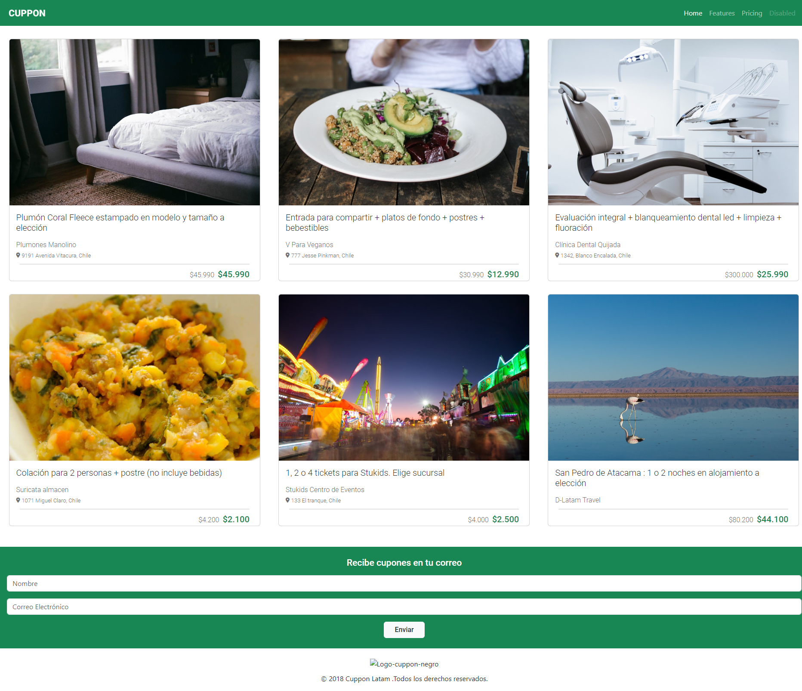
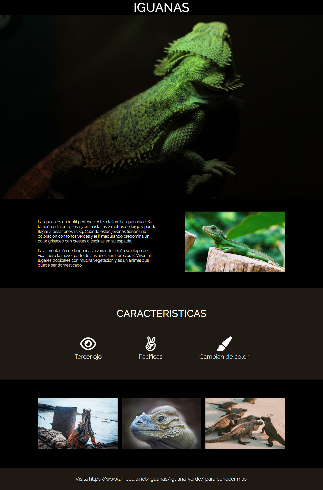

Datos Personales
- Nombre: Jonathan Alejandro Araos Araos
- Fecha de Nacimiento: 28/07/1991
- Dirección: Villa El Arrayan, Psj Añañuca #973, La Ligua
- Correo: Jonathan.araos.a@gmail.com
- Licencia de Coducir: Clase B
Formación Académica
- Educación Básica: Colegio San Jose Obrero 1998-2005
- Educación Media: Liceo Presidente Balmaceda 2006-2009
Resumen Academico
Terminando el año escolar de enseñanza media, tuve la oportunidad
de estudiar un tecnico en electricidad domestica
el cual me ayudo para
tener mis primeras experiencias laborales.
Experiencia Laboral
- Climatemp: Instalación y mantenciones a equipos de aire acondicionado. (2009-2010)
- Cencosud CD: Bodeguero. (2011-2012)
- Unimarc CD: Bodeguero. (2012-2013)
- Eléctrico: Instalaciones eléctricas particulares. (2013-2015)
- Aramark: Bodeguero, recepcionista, carga y descarga. (2015-2018)
- Nielsen: Técnico en servicios de repación e instalaciones en redes HFC. (2018-2019)
- Gasco: Conductor vendedor comisionista. (2019-2021)
- Transgaray: Conductor. (2021-a la fecha)
Portafolio

